Maven是一个项目管理工具，它包含了一个项目对象模型 (Project Object Model)，一组标准集合，一个项目生命周期(Project Lifecycle)，一个依赖管理系统(Dependency Management System)，和用来运行定义在生命周期阶段(phase)中插件(plugin)目标(goal)的逻辑。当你使用Maven的时候，你用一个明确定义的项目对象模型来描述你的项目，然后Maven可以应用横切的逻辑，这些逻辑来自一组共享的（或者自定义的）插件。
此外，Maven能够很方便的帮你管理项目报告，生成站点，管理JAR文件，等等
maven基础
下载
到官网Apache Maven去下载
pom.xml文件
pom作为项目对象模型。通过xml表示maven项目，使用pom.xml来实现。主要描述了项目：包括配置文件；开发者需要遵循的规则，缺陷管理系统，组织和licenses，项目的url，项目的依赖性，以及其他所有的项目相关因素。
<project>
<modelVersion>4.0.0</modelVersion>
<groupId>net.tmaize</groupId>
<artifactId>mvn-web</artifactId>
<version>0.0.1-SNAPSHOT</version>
<packaging>war</packaging>
<build>
<plugins>
....
</plugins>
</build>
<dependencies>
....
</dependencies>
</project>
标准目录结构
使用maven就必须遵守maven的目录结构，不然会编译失败的
java项目结构如下
src
main
java
resource
test
java
resource
target
pom.xml
web项目结构如下
src
main
java
resource
webapp
WEN-INF
web.xml
test
java
resource
target
pom.xml
常用命令
-
mvn clean
将项目根目录下target目录清理掉
-
mvn compile
将项目中的java文件编译为class文件
-
mvn test
单元测试，测试类名有要求XxxxTest.java
项目根目录下src/test/java目录下的单元测试类都会执行
-
mvn package
项目打包，生成的包在target的根目录。web项目会打成war包，java项目会打成jar包
-
mvn install:安装
将项目打包并安装到本地仓库，方便在其他项目上用。好处是如果项目有变动，只需要再次安装即可，其他的项目都不需要变动依赖
生命周期
所谓的生命周期就是在一套生命周期内，执行后面的命令前面的操作会自动执行
在Maven中存在三套生命周期，同时每一套生命周期相互独立互不影响
注意每个生命周期里面又有好多步骤，但是可以总结为下面几个主要步骤
CleanLifeCyle：清理生命周期,命令有clean
defaultLifeCyle：默认生命周期,命令有compile，test，package，install，deploy
siteLifeCyle：站点生命周期,命令有site
依赖范围
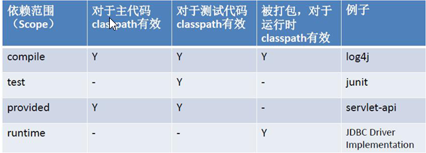
比如说servlet-api，在做项目的时候需要，但是把它打成war包发布到tomcat时不能把它编译进应为在tomcat里面已经有了servlet-api了，会有jar包冲突，所以要将servlet-api的依赖范围设置为provided
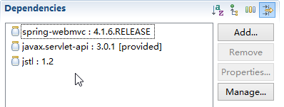
<dependency>
<groupId>javax.servlet</groupId>
<artifactId>javax.servlet-api</artifactId>
<version>3.0.1</version>
<scope>provided</scope>
</dependency>
解决依赖冲突
- 有时候jar包会有冲突。首先maven有一套自己的冲突解决方案
-
声明者优先原则 ，如果有冲突，优先用以最先依赖加进来的jar
-
路径近者优先原则 直接依赖高于传递依赖
如果通过上面两个步骤无法解决依赖问题还可以手动排除依赖
- 或者手动排除依赖，得到自己想要的
比如下图，我想使用高版本的commons-logging，但是又想把我的高版本commons-logging放在spring-webmvc后面，可以通过exclude手动排除jar包
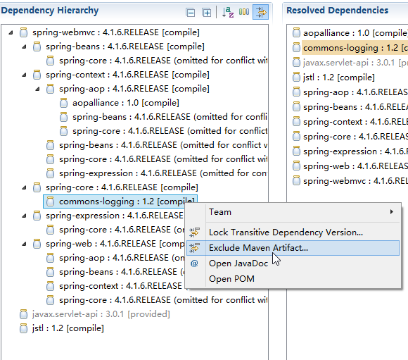
<dependency>
<groupId>org.springframework</groupId>
<artifactId>spring-webmvc</artifactId>
<version>4.1.6.RELEASE</version>
<exclusions>
<exclusion>
<groupId>commons-logging</groupId>
<artifactId>commons-logging</artifactId>
</exclusion>
</exclusions>
</dependency>
- 再或者使用版本锁定
这样的话最终使用的jar包是我指定的哪个版本
<dependencyManagement>
<dependencies>
<dependency>
<groupId>org.springframework</groupId>
<artifactId>spring-context</artifactId>
<version>4.3.10.RELEASE</version>
</dependency>
</dependencies>
</dependencyManagement>
<dependencies>
<dependency>
<groupId>org.springframework</groupId>
<artifactId>spring-context</artifactId>
</dependency>
</dependencies>
或者更规范一些,把版本集中起来，方便管理
<properties>
<junit-version>4.12</junit-version>
</properties>
<dependencyManagement>
<dependencies>
<dependency>
<groupId>junit</groupId>
<artifactId>junit</artifactId>
<version>${junit-version}</version>
</dependency>
</dependencies>
</dependencyManagement>
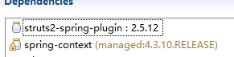
小技巧
mvn archetype:generate 插件可以使用不同的模版快速生成一个maven项目
mvn help:effective-pom 显示项目完整的依赖
mvn cobertura:cobertura 生成代码测试的覆盖率
为不同的环境配置不同的数据库连接信息
<profiles>
<profile>
<id>dev</id>
<activation>
<!-- 代表当前为dev环境 -->
<activeByDefault>true</activeByDefault>
</activation>
<properties>
<url>jdbc:mysql://127.0.0.1:3306/dev?characterEncoding=utf-8</url>
</properties>
</profile>
<profile>
<id>run</id>
<properties>
<url>jdbc:mysql://127.0.0.1:3306/book?characterEncoding=utf-8</url>
</properties>
</profile>
</profiles>
<!-- 添加要过滤的目录 -->
<build>
<resources>
<resource>
<directory>${project.basedir}/src/main/resources</directory>
<filtering>true</filtering>
</resource>
</resources>
</build>
在数据库的配置文件一行url=${url},在项目运行的时候会根据pom中指定的环境替换${url},只需要改变activeByDefault的位置即可
在eclipse使用maven
m2e插件，eclipse自带，只需要配置一下即可
默认也自带maven，一般不使用，使用自己下载的即可
基本配置
找到maven的安装目录，在conf/settings.xml里面配置本地仓库位置
<localRepository>E:/apache-maven-3.3.9/local-repo</localRepository>
在eclipse里面安装设置maven
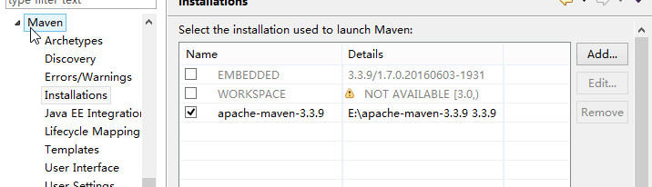
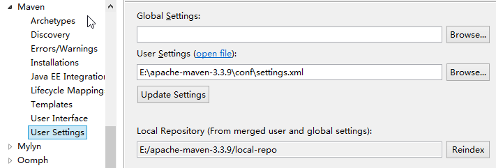
刷新设文件，在本地仓库建立索引
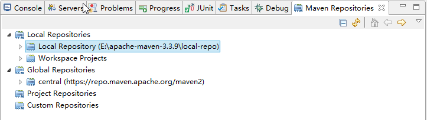
建立项目
注意不要再建立Java Project了，要建立Maven Project
先选择项目位置,最上面勾选了会跳过模板选择界面，使用最简单的项目目录骨架
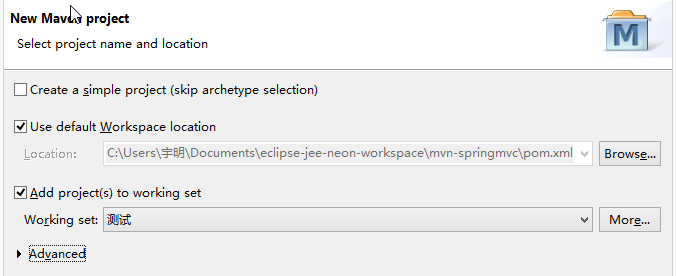
Packaging决定了是web项目还是java项目，选错了没关系，在pom.xml文件里面都可以更改的
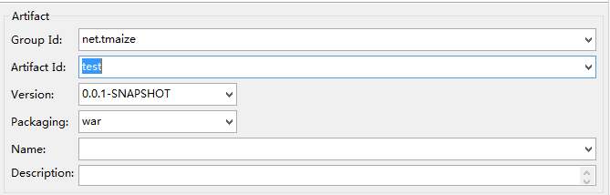
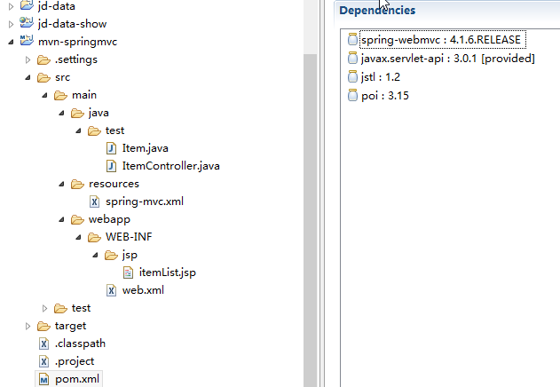
项目依赖/插件配置
一般eclipse会自动分析pom.xml里面的依赖，并自动构建，比如下载jar文件
也可以在项目上右键 Maven-update project 重新构建项目,如果项目出现感叹号的时候可以重新构建一下
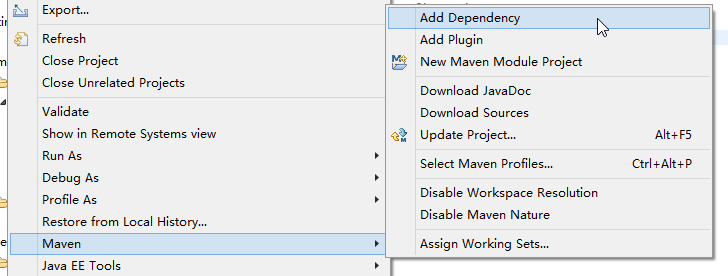
<!-- 插件 -->
<build>
<plugins>
<plugin>
<groupId>org.apache.maven.plugins</groupId>
<artifactId>maven-compiler-plugin</artifactId>
<version>3.1</version>
<configuration>
<source>1.8</source>
<target>1.8</target>
<encoding>utf-8</encoding>
</configuration>
</plugin>
</build>
<!-- 依赖 -->
<dependencies>
<dependency>
<groupId>javax.servlet</groupId>
<artifactId>javax.servlet-api</artifactId>
<version>3.0.1</version>
<scope>provided</scope>
</dependency>
</dependencies>
项目的运行
java项目直接运行，对于web项目有下面两种方式运行
第一个Maven Build 是直接使用上次命令运行，第二个Maven Build…是输入命令运行
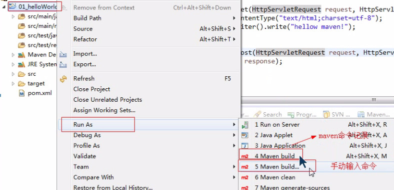
-
直接运行tomcat:run
maven内置了tomcat,可以直接运行
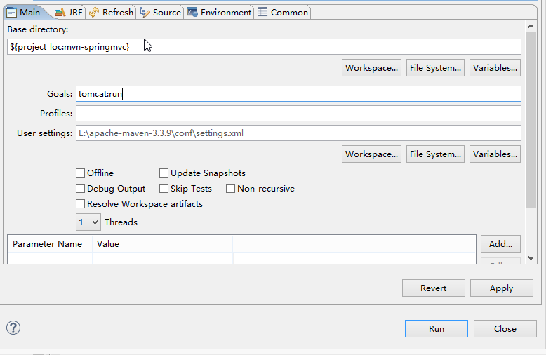
如果需要使用较新版本的tomcat，比如使用注解
可以通过插件的方式安装tomcat7，运行命令也就变成了tomcat7:run,配置如下
<plugin> <groupId>org.apache.tomcat.maven</groupId> <artifactId>tomcat7-maven-plugin</artifactId> <version>2.1</version> <configuration> <path>/</path> <contextReloadable>true</contextReloadable> <uriEncoding>UTF-8</uriEncoding> </configuration> </plugin> -
使用eclipse的配置好的tomcat
build之后会有war包，可以工具会自动扫描项目里面的war包，然后部署到自己的tomcat上面
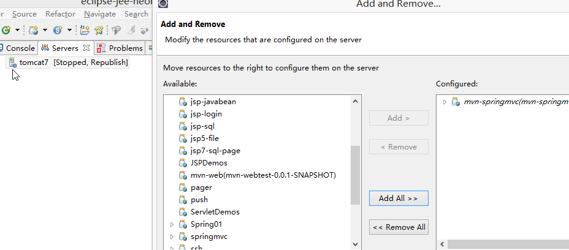
通过maven对项目进行拆分
比如将web项目的三层从一个项目拆分成三个项目
每个项目完成后通过模块的方式再和主项目进行组合
主项目并不写代码，只是把依赖配置好，然后每个子模块再添加主项目这个依赖
最后运行主项目即可
-
创建父工程(Maven Project)，配置pom.xml
-
把父工程install到本地仓库
-
创建子工程(Maven Module),设置选择父工程，设置打包方式为jar
-
解决子工程间的类依赖，只需要把依赖的子项目install后再添加依赖即可
ssh-parent
ssh-dao
ssh-service
ssh-web
私服的安装
即在本地搭建一个和apache的中心仓库很想的本地Maven仓库管理器
可以供局域网使用，先到本地仓库找jar包，再到私服找jar包，最后才到互联网上的中心仓库寻找
Nexus是一个强大的Maven仓库管理器，它极大地简化了自己内部仓库的维护和外部仓库的访问。 利用Nexus你可以只在一个地方就能够完全控制访问 和部署在你所维护仓库中的每个Artifact。 Nexus是一套“开箱即用”的系统不需要数据库，它使用文件系统加Lucene来组织数据…..